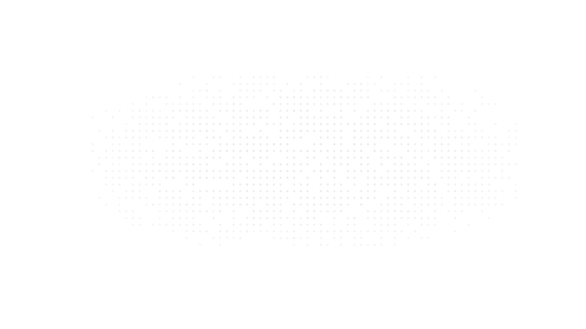
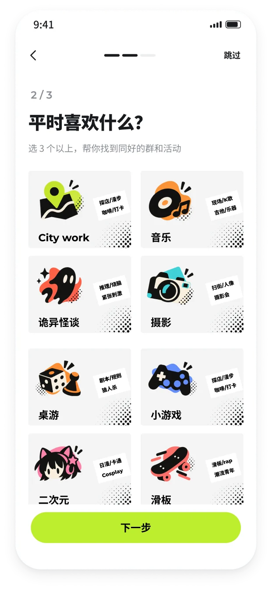
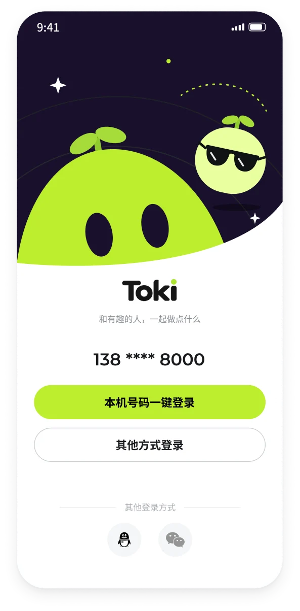
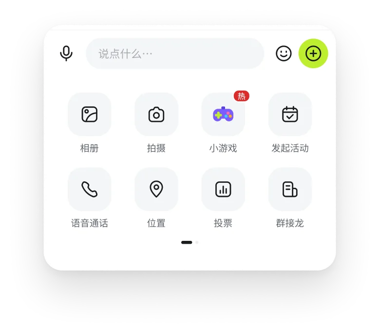
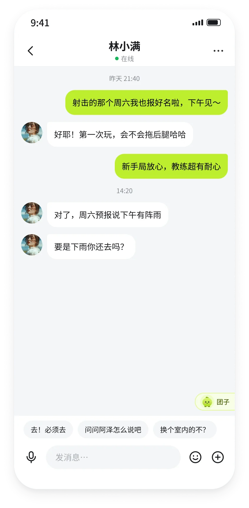
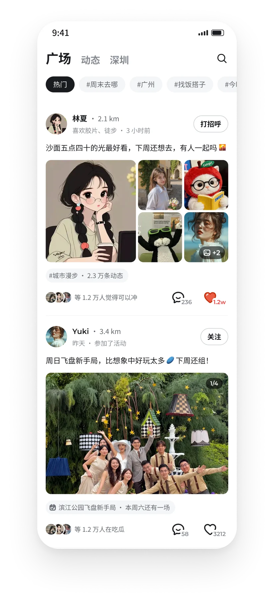
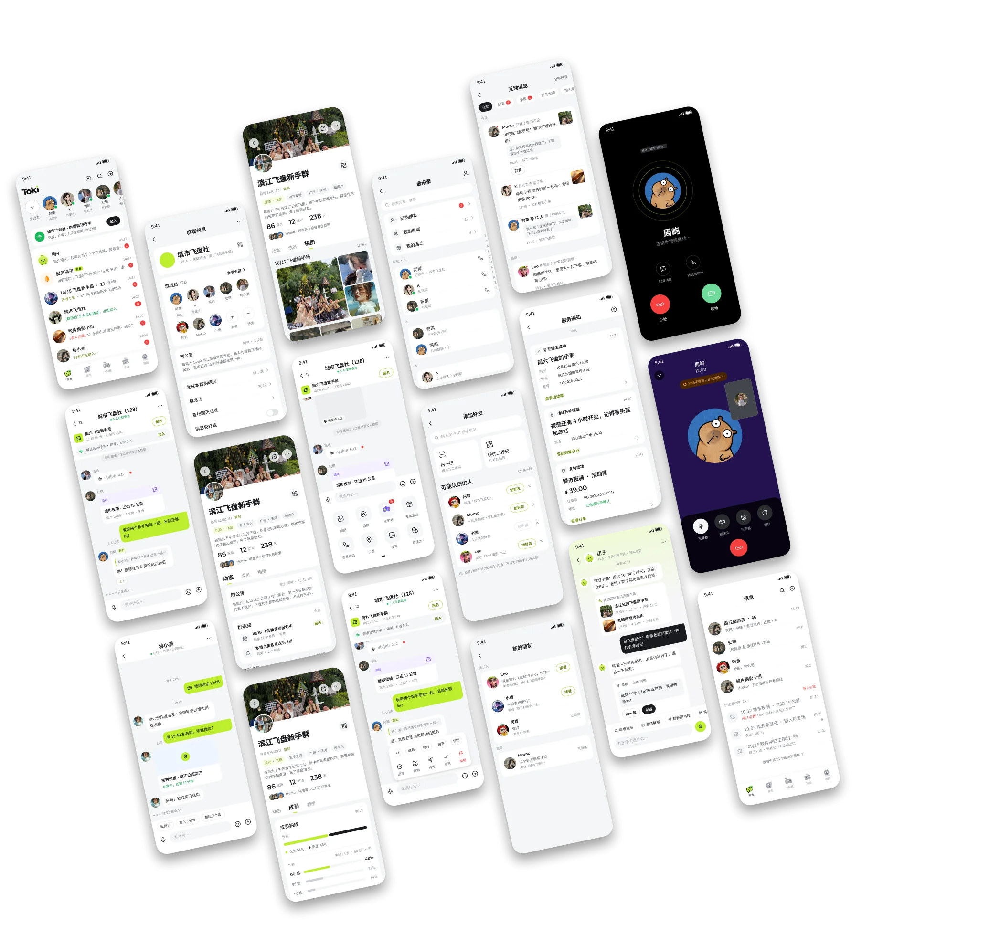
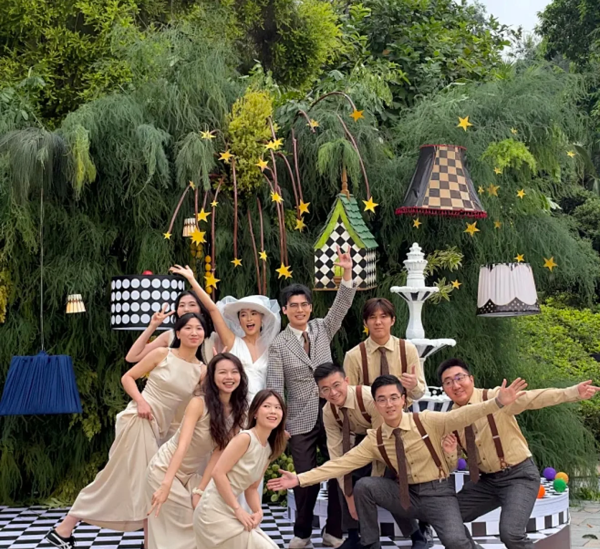
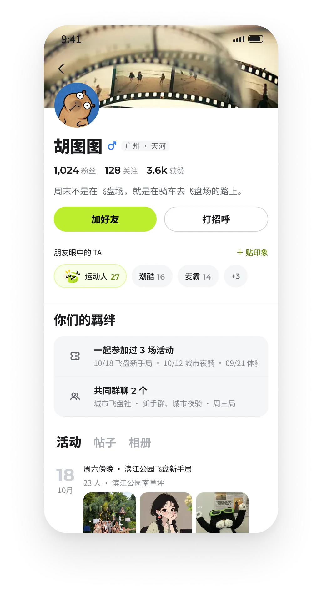
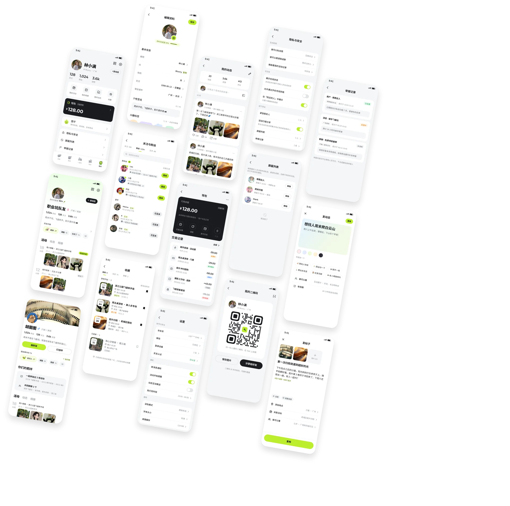

Toki · Design Work
兴趣社交 App
01 / 18
Design Work
兴趣社交 App · 产品与体验设计
以即时互动贯穿社交体系，注重关系沉淀与互动
Toki · Design Work
项目概览
02 / 18
PROJECT OVERVIEW
项目概览
项目背景
AIGC项目，项目使用Claude-MCP、GPT配合构建。 产品策略 · 信息架构 · 交互设计 · 视觉、变量、与组件库，0-1独立完成
产品定位
以即时互动为底座，通过圈组兴趣、小游戏和线下活动，让社交关系自然沉淀
目标用户
18–30 岁、刚到新城市或圈子变小、想认识同好但不擅长主动开口的年轻人。
Toki · Design Work
用户分析
03 / 18
01
用户分析
用户画像
社交场景 缺的不是「遇见」，而是开口的理由和延续的场景
Toki · Design Work
问题分析
04 / 18
02
问题分析
社交场景的三个卡点
遇见
开口
聊下去
留下来
卡点 01
卡点 02
卡点 03

产品旅程
Toki 的旅程，以塑造一段关系的生长来组织：前半程负责认识，后半程负责沉淀；中间的一起玩和活动同时承担两件事，既带来新的人，也让认识的人变熟。
关系温度
从认识到沉淀出社交关系
让关系留下来
认识
交集
沉淀
Toki · Design Work
产品架构
Toki · Design Work
设计语言
06 / 18
06
设计语言 · Design System
设计规范资产

Toki · Design Work
01 新用户引导
07 / 18
01 · ONBOARDING
三步
新人用户场景
打开一个空的消息列表是有落差的。引导收集两样东西：性别生日和兴趣，然后直接推荐正在实时互动的兴趣群
兴趣是社交货币
趣味插图标签，交互产生动态效果，选兴趣本身就有趣；选择结果也是之后推荐群、找共同点的依据。
为什么是群聊？不是个人
·一对一陌生人硬聊天，关系建立门槛高，需要主动破冰；面对陌生人时，容易出现不知道聊什么，聊天说话成为负担 ·以群进入，先进组织，发现最近有趣的事和人，逐步融入圈子
3 Steps
性别生日 · 选兴趣 · 推荐群聊 · 消息首页

Toki · Design Work
03 聊天
08 / 18
03 · CHAT
首页
消息页 社交正在发生
消息页不仅是聊天入口，更应该是实时社交的信息流， 已报名活动的动态信息，好友此刻的状态动向，群内互动的扩展，都能给用户带来自然的沟通话题
好友状态
阿栗在滨江、周屿在听歌——一句状态就是一个打招呼的理由
群聊
活动置顶、群语音一键加入； 点 + 就能开小游戏、发起活动，群不只是用来发通知

更多面板
小游戏、发起活动排第一行 聊着聊着，就能在群里开一局
Toki · Design Work
04
聊天 · AI辅助
聊天互动

聊天场景中3个卡住的时刻
团子只在这几种时候出现
01
认识
不知道怎么开口
主动弹出 - 破冰开场
什么时候出现
刚加上好友，对话还是空的
02
互动
不知道怎么回
被动交互-团子帮你回
什么时候出现
面对问题，输入框上方先给短回复；想看完整的就点团子
03
维持
一段时间没联系的朋友
主动弹出-续聊提醒·关系维持
什么时候出现
好友超过7天没互动，对话显示
！
只建议，不代发
点一下进输入框，发送权交给用户。AI辅助需有分寸，侵扰用户聊天权限易引起反感
常态
09 / 18
Toki · Design Work
02 发现
10 / 18
02 · DISCOVER
发掘和兴趣 认识新的人
整个发现页用于用户探索新的人和信息，同时关注自己的互动圈子里在发生什么
帖子和动态分开
广场只放公开的图文帖子；动态只给好友和关注、粉丝看，只能发文字，发起来没有压力。
地图是同城的入口
人和局直接标在地图上，地图下面是附近的帖子，直观发现自己身边的同兴趣新朋友

Toki · Design Work
02 发现
11 / 18
02
发现 · 内容体系
帖子和动态，不同维度的呈现

03 · CHAT
聊 天 总 览
会话 · 群聊 · 私聊 · 通话 · 好友关系
Toki · Design Work
12 / 18
Toki · Design Work
03 聊天
13 / 18
03
互动玩法切入
除了聊聊天，还能一起做什么加快熟悉？
Toki · Design Work
06 · PLAY
游戏是破冰的借口
低门槛的互动游戏
利用低门槛的游戏互动，降低陌生人之间的社交压力，再通过共同体验建立关系。
入口跟着人走
延续游戏后的关系
场景在哪里，入口就在哪里，群聊里，消息中，好友的状态，同城的动态，都是小游戏可以发挥作用的场景
通过展示好友正在玩的游戏、推荐可加入的房间及最近玩过的游戏，为后续互动提供话题和再次连接的机会。
消息
对话窗口· + 小游戏
发现
好友正在玩
新人引导
推荐群「今晚开局」
问
一起玩过
你们一起玩过什么，翻到这个人就想起那一局，TA人主页同步呈现彼此之间的互动
群聊 · 详情
最近在玩
群详情记下大家玩过的游戏， 下次开局点一下就行。
14 / 18

Toki · Design Work
04 活动
15 / 18
04 · EVENTS
从线上到线下
见一面 胜过聊一百句
活动是 Toki 最重的一环。活动页按兴趣和距离推荐，详情页把「谁在参加」放在显眼处，让人先看到人，再看到活动。
人比活动更重要
详情页优先展示参加的人、主理人认证和剩余名额，给陌生人一个敢去的理由。
活动门槛
时间、集合点、交通、要带什么，一屏说清，降低第一次参加的不确定感。
Toki · Design Work
04 活动
16 / 18
04
活动 · 全流程
参加活动流程
01
浏览活动
按兴趣、距离和时间筛选
02
看详情
先看谁在参加，再决定去不去
03
确认支付
费用透明，确认即报名
04
支付结果
生成活动票，提醒时间地点
05
进活动群
报名即进群，已有人在打招呼
06
回忆期
群照片自动存档，提示用户发文
07
加好友
推荐互动过的队友，散场不散人
报名
活动后
Toki · Design Work
05 我的
17 / 18
05 · PROFILE
个人主页
一眼了解你
个人主页是陌生人决定要不要打招呼的地方。比起自我介绍，朋友给的印象更可信；比起粉丝数，你们之间的羁绊更能促成第一次开口。
好友印象
朋友投票贴上的标签，按票数只露前三，第一名配团子贴纸。
你们的羁绊
一起参加过的活动、共同群聊，陌生人之间最自然的话题。


Toki · Design Work
05 · PROFILE
个人 页面总览
资料 · 关系 · 记录 · 设置 · 发布
18 / 18